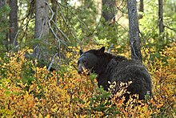
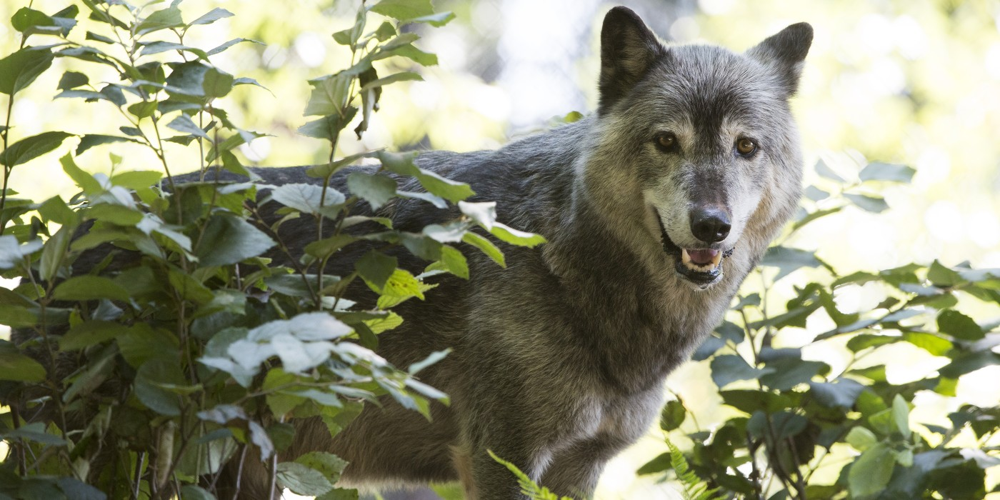
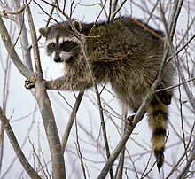

American black bear (Ursus americanus), also known as the black bear is a medium-sized bear primarily found in the forests of North America. The black bear's diets consist mostly of vegetation, but they will also eat any fish they can catch, and sometimes though not often they will hunt larger animals like deer or moose. Black bears typically go into hibernation in October or November, and their hibernation can last 3-8 months depending on what climate they are in.

The wolf (Canis lupus), also known as the gray wolf, is a large canine that is native to Europe and North America. In North American wolves primarily live in forest regions, though they have been known to inhabit wetlands, shrublands, and grasslands too. Wolves are social animals that live in packs with an average size of 8. They hunt medium and large-hoofed mammals. Wolves are often found in various mythologies such as ancient Greek and Roman fables. In the wild, a wolf can live up to 8 years, but up to 20 years in human care.

The raccoon (Procyon lotor), sometimes called the common raccoon or “trash pandas” is only native to the forests of North America. Raccoons are nocturnal omnivores that eat small invertebrates, plants, and vertebrates. Raccoons are often found around urban areas and are considered a pest as they often dig through trash looking for food. Speaking of food, raccoons often wash their food in water though it is only to soften food not to clean it.

Tip: Click on the name of an animal to go to its wikipedia page!